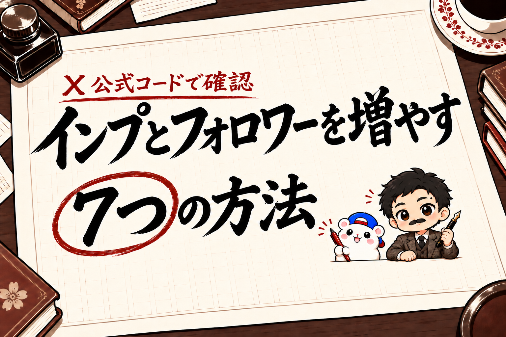

Xを伸ばしたいなら、いいねを集めるより先に、大事なことがあります。
- 「返信」をもらうこと
- 「興味なし」を押されないこと
Xは、おすすめ欄の点数のつけ方を、公開コードとして出しています。
11月14日の版を読むと、いいね1回は0.708点。返信は5点。相互フォローの人の返信は20点。
そして「興味なし」を1回押されると、−53点です。いいね約75回ぶんが、1回で消えます。
この記事では、Xの公式の情報(公開コード・ヘルプ・規約)だけで、しくみと11月の変更、おすすめに出なくなる落とし穴、そして伸ばすためのやり方7つをまとめました。
※公開コードの値は「既定の値」です。本番では実験で変えていることもあります。
この記事を書いた人

この記事は、Xの公開コードを10月から読みつづけ、AIに任せている発信の作り方を直してきたきくりんが書いています。
発信用のアカウントはフォロワーゼロから始めて、教材の利益は2ヶ月で101.5万円(手取り)でした。
実際のアカウントはこちらです。
eBay輸出のアカウント(チャム)

レンタルスペースのアカウント(きくりん)

はじめに: Xの「アルゴリズム」とは?
アルゴリズムとは、Xが「だれに、どの投稿を表示するか」を決める計算のしかたです。
Xのホームには、2つの欄があります。
- フォロー中: フォローしている人の投稿が、新しい順に出る欄
- おすすめ: フォローしていない人の投稿もまぜて、Xが点数の高い順に出す欄
インプ(投稿が画面に出た回数)が大きく伸びるのは、ほとんどが「おすすめ」に乗ったときです。
この「おすすめ」の点数のつけ方を、XはGitHub(プログラムを公開する場所)で公開しています。

ここに書いてあることは、うわさではなく、Xが自分で出しているコードです。
毎週のように書きかわるので、この記事は2026年11月14日の版で書いています。
1. 1本のポストが広がるまでの4段
あなたのポストは、4つの段を通って広がります。
- フォロワーのおすすめ欄に出る
- 投稿から2時間、フォロー外の人にも「お試し」で出る
- 見た人の反応を予想して、点数がつく
- スパムやAI量産と判定された投稿は、ふるいで落とされる
いちばん大事なのは、2の「お試し」です。
公開コードでは、次の3つがそろった投稿が、フォロー外の人のおすすめにも、ためしに表示されます。
| 条件 | 公開コードの値 |
|---|---|
| フォロワー | 5万人以下 |
| 投稿してから | 2時間以内(7,200秒) |
| インプ | 200未満 |
お試しに選ばれるかは、いいね率(いいね÷インプ)で決まります。出発点は約1.5%です。
つまり、投稿して2時間のうちに、見た人の約1.5%がいいねするかが、外に広がる入口です。
フォロワーが少ないうちほど、この2時間がチャンスになります。
出典: github.com/xai-org/x-algorithm home-mixer/params/param.rs(2026年11月14日の版)
2. 点数のつけ方: いいねより、返信
おすすめ欄の点数は、「見た人がその行動をしそうな確率」×「その行動の重さ」の合計です。
重さは、行動ごとに大きく違います。
- 相互フォローの人からの返信: 20点(返信5+上乗せ15)
- 返信・引用・DMで送る: 5点
- フォローされる: 4点
- いいね: 0.708点
返信1回は、いいね7回ぶん。相互フォローの人の返信なら、いいね28回ぶんです。
Xが見ているのは「どれだけ好かれたか」より、「どれだけ会話が生まれたか」です。
反対に、マイナスも大きく決まっています。
- 通報: −234点
- ミュート: −58.8点
- 興味なし: −53.07点
- ブロック: −31.2点
「興味なし」1回で、いいね約75回ぶんが消えます。
広くだれにでも当てるより、読んでほしい人にしぼったほうが、点数は残ります。
出典: github.com/xai-org/x-algorithm home-mixer/params/param.rs(2026年11月14日の版)
3. 11月に変わった3つ
| 何が | 前 | いま | いつ |
|---|---|---|---|
| リンクをコピー | 20点 | 0点 | 11月13日 |
| いいね・シェア | 0.66点・2.0点 | 0.708点・2.118点 | 11月5日 |
| 直前に見た投稿と似た投稿 | 下げない | 下げる(直近10分) | 11月14日 |
1つめは、いちばん大きな変化です。
10月までは「リンクをコピー」がいちばん重い20点でした。「リンクをコピーして送ってね」と書く型が効いていたのは、このためです。
11月13日に、これが0点になりました。いま同じ「送る」でも点が付くのは、DMで送る(5点)と引用(5点)です。
2つめは、いいねとシェアが少し重くなりました。あわせて「動画を開く」は0点になりました。動画は、動画だからではなく、いいねや見ている時間で点が付きます。
3つめは、同じような投稿がつづかないようにする変更です。
見る人が直前の10分に見た投稿と似ているものは、点数が下がりやすくなりました。
同じ型のポストを、同じ時間帯にまとめて出すと、おたがいに打ち消し合います。
出典: github.com/xai-org/x-algorithm home-mixer/params/param.rs(2026年11月14日の版・コミット590f392)
4. おすすめに出なくなる5つの落とし穴
| 落とし穴 | どうなる | 出典 |
|---|---|---|
| AIの量産と判定される | 7日間、本人以外に表示されない | 公開コード |
| すばやい返信スパム・意味のない文 | その投稿に30日のラベル | 公開コード |
| 複数のアカウントで同じ・ほぼ同じ投稿 | おすすめ・検索に出なくなる・凍結 | X公式ヘルプ |
| 自動のいいね・大量フォロー・フォローの出し入れ | 機能の制限・一時ロック | X公式ヘルプ |
| APIを使わない自動化(ブラウザを操作して送る) | 永久凍結もありうる | X公式ヘルプ |
伸ばすやり方より先に、ここを押さえておくと安心です。
点数がどれだけ高くても、ふるいで落とされたら、おすすめには出ません。
いちばん気をつけたいのは1つめです。
公開コードには、「AIの量産をする人」と判定されたら、7日間スパムのラベルを付けるという決まりがあります。ラベルが付いた人の投稿は、本人以外には表示されません。
判定の基準そのものは公開されていません。ただ、「AIっぽい文を、毎日たくさん」は、まさに狙われている形です。
出典: github.com/xai-org/x-algorithm abuse-enforcement-service/service-lib/rules/enforcement_user.yaml(604,800,000ミリ秒=7日)
X公式の決まりでは、ほかにも次のことがはっきり書かれています。
- いいねは、本人が直接押すもの(自動のいいねは禁止)
- AIが作った返信を自動で送るには、Xの事前の書面での承認が必要
- フォローは1日400件まで。大量・無差別なフォローは禁止
例えば、ぼくの2つのアカウントも、11月15日に一時ロックがかかりました。解除したら、フォローが0になっていました。
ぼくも、自動で動かしているものを、いま規約と1つずつ見くらべています。
AIに発信を任せるときは、Xの規約を確かめたうえで、ご自身の責任で使ってください。
自分のアカウントにラベルが付いていないかは、Xが試験中の「Under the Hood」(x.com/i/jf/under_the_hood)で見られることがあります。
5. インプとフォロワーを増やす7つのやり方
| # | やること | 効く点数 |
|---|---|---|
| 1 | 1行目に、あなたしか書けない数字か場面を入れる | お試し表示・AI量産と判定されない |
| 2 | 最初の2時間に反応してくれる仲間をつくる | お試し表示(いいね率1.5%) |
| 3 | 返信は自分の手で、相手の言葉の1点を拾う | 返信5・相互の返信20 |
| 4 | 「DMで送りたい」「一言足して引用したい」中身にする | DM5・引用5 |
| 5 | 同じ型をつづけない・時間をあける | 2本目×0.625・似た投稿の下げ |
| 6 | 読んでほしい人をしぼる | 興味なし−53を避ける |
| 7 | プロフと固定ポストで、フォローする理由を伝える | フォローされる4 |
1. 1行目に、あなたしか書けない数字か場面
AIが量産した文は、だれが書いても同じ言葉になります。
あなたがやった日付・数字・画面を1行目に入れるだけで、ほかの投稿と区別がつきます。
例えば「AIで記事を作るコツ」より、「録音3分から、AIで記事を1本作った」のほうが、あなたにしか書けません。
2. 最初の2時間に反応してくれる仲間
お試し表示は、投稿から2時間のいいね率で決まります。
ふだんから話している人がいれば、その人たちの反応が、外に広がる入口になります。
フォロワーの数より、反応してくれる人の数のほうが効きます。
3. 返信は自分の手で
相互フォローの人からの返信は20点で、いちばん重い行動です。
返信をもらうには、まず自分から返信するのが近道です。相手の投稿の言葉を1つ拾って、読んだことが伝わる1〜2文にします。
ただし、フォローしていない人への返信は、おすすめ欄には出ません。会話は、つながっている人どうしで育てるものです。
4. 送りたくなる中身
「リンクをコピーして送ってね」は、もう点になりません(0点)。保存も、もともと点数の表にはありません。
点になるのは、DMで送られること・引用されることです。
手順・チェックリスト・比べ表のように、「これ、あの人に見せたい」と思える中身にします。
5. 同じ型をつづけない
おすすめ欄では、同じ人の投稿がつづくと、2本目は×0.625、3本目は×0.438と下がります。
さらに11月14日から、直前に見た投稿と似たものも下がります。
本数をふやすなら、時間をあけ、型(話題・書き方)を変えます。くわしくは前の記事に書きました。

6. 読んでほしい人をしぼる
「興味なし」は1回で−53点です。
だれにでも当てる言葉より、「この人に読んでほしい」と決めた言葉のほうが、押されにくくなります。
7. フォローする理由を伝える
フォローされることは4点です。
ポストを見て「この人、何者?」と思った人は、プロフを開きます。
そこで、名前と自己紹介と固定ポストが「フォローすると、何が手に入るか」を答えていれば、フォローにつながります。
6. この記事をAIに読ませて、自分のポストを点検する
この記事を、あなたが使っているAIに読ませると、同じ基準で自分のポストを点検できます。
- 直近30本のポストの文と、インプ・いいね・返信の数を書き出す
- この記事のURLと一緒に、AIに渡す
- 「この記事の7つのやり方に照らして、伸びたポストと伸びなかったポストの違いを3つ教えて」と頼む
見てもらうとよいのは、次の3つです。
- 1行目に、自分にしか書けない数字や場面があるか
- 同じ型のポストが、つづけて出ていないか
- 返信をもらえる終わり方になっているか
AIの答えは、あくまで点検のたたき台です。決めるのは、あなたです。
まとめ: Xで伸ばすなら、3つの順で
- 守る: AIの量産・自動のいいね・ブラウザ操作の送信など、ふるいで落とされることをしない
- 2時間で勝つ: 1行目にあなたしか書けない数字や場面を入れて、最初の2時間のいいね率を取る
- 会話で広げる: 相互フォローの人と返信し合い、DMで送りたくなる中身を出す
いいね1回は0.7点、返信は5点、相互フォローの人の返信は20点。そして「興味なし」は−53点。
Xが点数で見ているのは、たくさんの投稿ではなく、会話が生まれる1本です。
あなたの直近のポストで、いちばん返信が付いたのは、どんな1本でしたか?
まずはその1本の1行目を、見直すところから始めてみてください。
▼ネタの作り方から、AIで教材にまとめて売るまで、やったことを1冊にまとめてあります
フォロワーゼロから利益95.8万円まで、54日間の数字と失敗と手順を、全部書いた教科書です。
録音から記事、教材、販売ページ、売れたあとの台帳まで。うちで毎日使っているツールも付録に入れました。
『noteから始める「AI×◯◯」コンテンツ販売の教科書｜フォロワーゼロから利益95.8万円』


販売価格は3部売れるごとに2,000円ずつ値上がりします（上限あり）。内容・最新価格は販売ページをご確認ください。